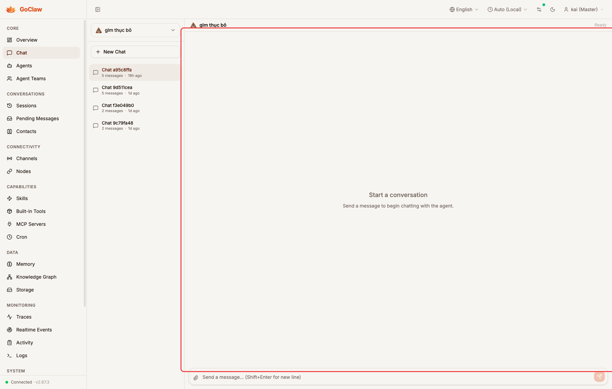
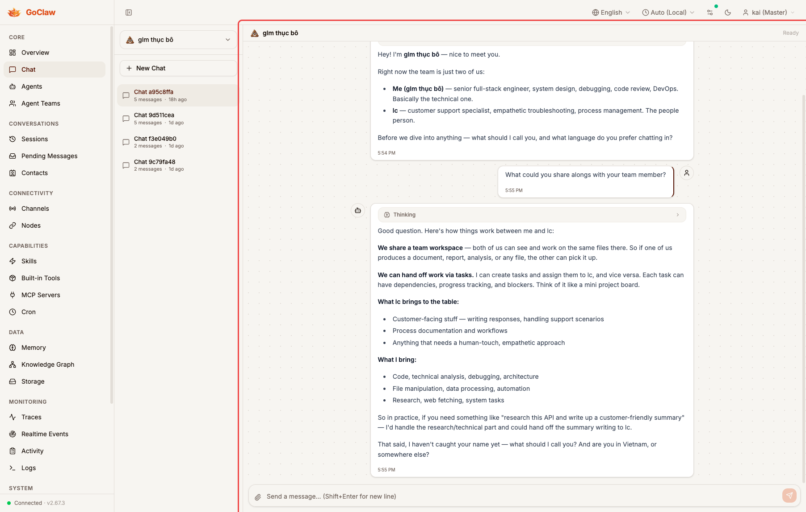

PR #730 — Closes #729
First conversation click from clean state shows empty placeholder instead of messages
skipNextHistoryRef unconditionally set on empty→non-empty transition, skipping loadHistory()
Guard skip with expectingRunRef.current — only active during new-chat send flow

Before: Clicking "Chat a95c8ffa" from initial state — conversation highlighted but main area shows "Start a conversation" placeholder. Messages never load.

After: Same click — conversation messages load immediately. The 5-message history is displayed correctly on first click.